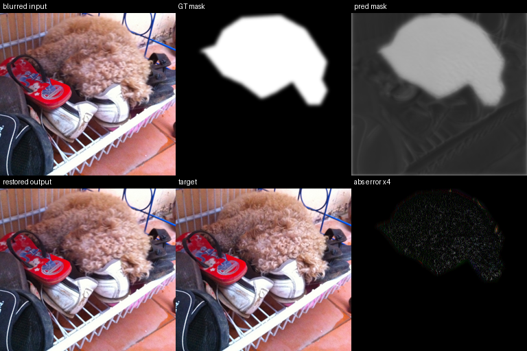
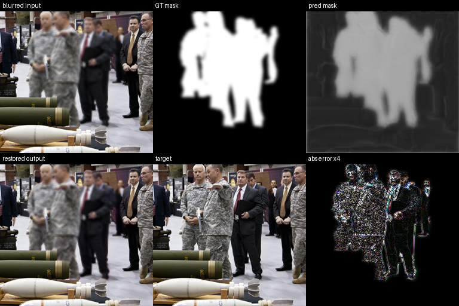
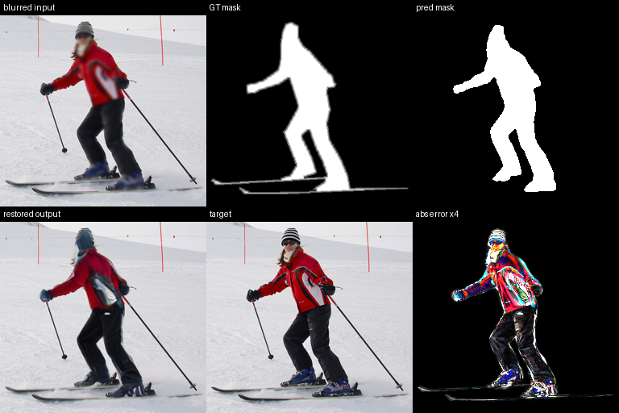
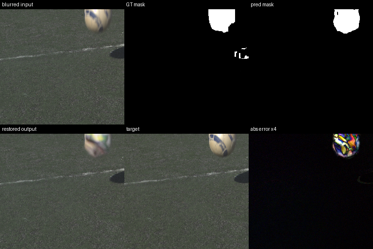
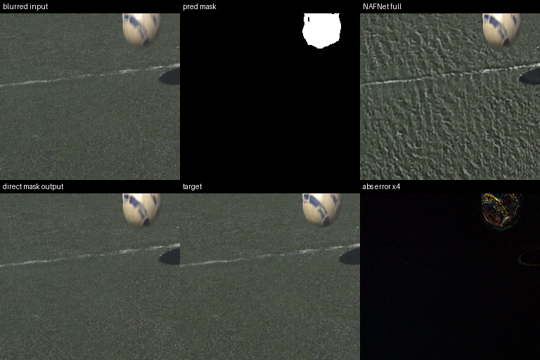
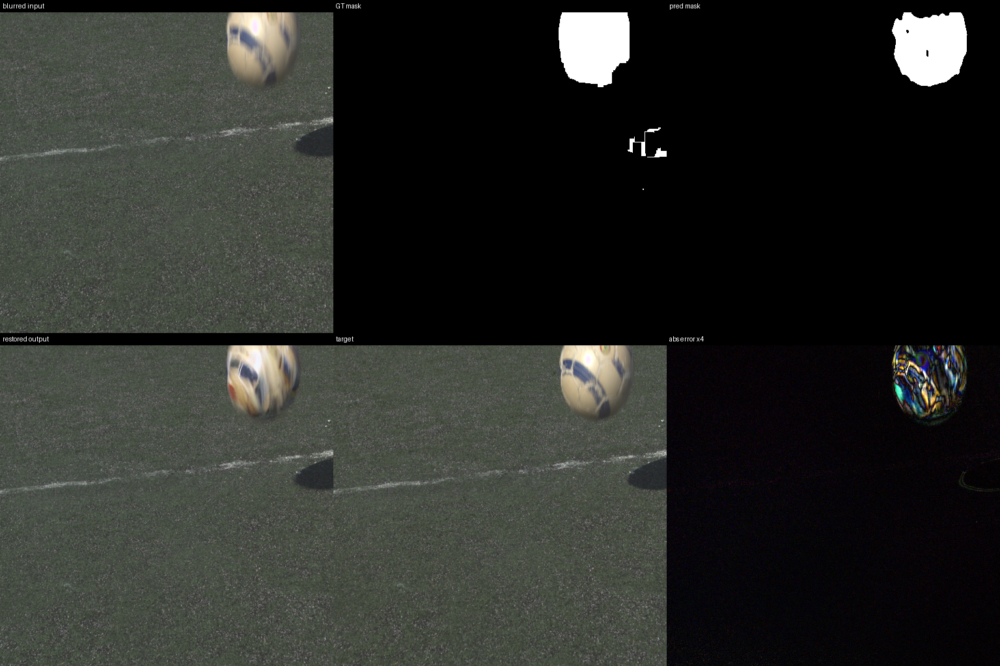

The original goal of this project was local image deblurring: given a blurred input image Ib, identify the blurred region M, restore only the local degraded area, and preserve the non-blurred background as much as possible. The proposal direction was Stable Diffusion + ControlNet: ControlNet receives spatial conditions such as the blurred image, blur mask, and semantic/background information, while Stable Diffusion provides a generative prior for local restoration. The training plan was to pretrain on synthetic COCO data and then fine-tune on real ReLoBlur data.
The final results did not reach the expected level of stable local deblurring described in the proposal. The issue is not a single hyperparameter. The current SD-based pipeline lacks sufficiently strong semantic and structural constraints. Even when background compositing is applied after inference, the diffusion model still tends to reconstruct or regenerate the full image internally, which can cause local content, texture, and color drift. Mask boundary errors further amplify this instability. Therefore, this report is written as an analysis-oriented summary: what was attempted, what the results show, and why the expected quality was not achieved.
Two types of data were used. The overall training flow was to pretrain on synthetic COCO data and then fine-tune on ReLoBlur.
For COCO, local blur samples were generated by applying motion, Gaussian, or defocus blur to selected target regions. Each sample stores Ib as the blurred input, M as the blur-region mask, S as semantic/background auxiliary information, and target as the sharp target image. A separate Stage 1 mask predictor was also trained using only Ib as input, so the mask prediction model did not receive the ground-truth mask as input. On data/COCO/train and data/COCO/val, the calibrated Stage 1 checkpoint reached mask IoU 0.8000 and Dice 0.8809 at threshold 0.55, but boundary IoU was only 0.2934.
For ReLoBlur, the dataset followed the original paper's data and mask structure and was converted into the same manifest format for fine-tuning and evaluation. Since real images are large, ReLoBlur fine-tuning used a BAPC/crop strategy. Most ReLoBlur results in this project are 5-sample infrastructure checks, not full ReLoBlur benchmarks.
Ib -> M_pred, and the predicted mask was then fed into SD + ControlNet.ConditionalLocalDeblurNet reached PSNR 35.54 and SSIM 0.9951 on 100 synthetic5k-val samples, but it is not SD + ControlNet and is not a ReLoBlur benchmark.lr=2e-6 short fine-tuning and COCO 5-epoch + ReLoBlur 10-epoch full-flow fine-tuning at lr=5e-7.timestep_max=200 and used inference strength=0.3.| Method | Data | Samples | PSNR | SSIM | W-PSNR | W-SSIM | Mask IoU | Mask Dice | Note |
|---|---|---|---|---|---|---|---|---|---|
| Lightweight CNN baseline | COCO synthetic5k-val | 100 | 35.538 | 0.9951 | 25.249 | 0.9431 | 0.700 | 0.812 | Non-diffusion, non-ReLoBlur baseline for local deblurring. |
| SD1.5 + Tile ControlNet with GT mask, COCO 3-epoch pretrain | COCO20k val | 5 | 25.433 | 0.9784 | 16.000 | 0.7626 | 1.000 | 1.000 | Validates the GT-mask conditioning route only. |
| Separate Stage 1 mask prediction, then SD + ControlNet | COCO20k val | 5 | 25.769 | 0.9786 | 16.401 | 0.7673 | 0.755 | 0.848 | Uses predicted Ib -> M mask, not GT mask. |
| COCO pretrain + ReLoBlur fine-tune at lr=2e-6, pred-mask inference | ReLoBlur test | 5 | 28.816 | 0.9194 | 19.544 | 0.8730 | 0.548 | 0.701 | 5-sample infrastructure check, not a full benchmark. |
| COCO 5-epoch pretrain + ReLoBlur 10-epoch fine-tune at lr=5e-7 | ReLoBlur test | 5 | 29.614 | 0.9333 | 20.366 | 0.8946 | 0.548 | 0.701 | Full-flow small-sample check after lr/training-length adjustment. |
| ModelScope NAFNet directly inside predicted mask with soft boundary blending | ReLoBlur test | 5 | 38.452 | 0.9817 | 30.269 | 0.9899 | - | - | Not SD reconstruction; closer to local deblurring post-processing. |
| Stage3: NAFNet preprocessing + ControlNet full-weighted loss | ReLoBlur test | 5 | 28.916 | 0.9395 | 19.641 | 0.8774 | 0.548 | 0.701 | Uses low-noise refinement with timestep_max=200 and strength=0.3. |
| Stage3: NAFNet preprocessing + ControlNet mask-only loss | ReLoBlur test | 5 | 29.044 | 0.9394 | 19.795 | 0.8793 | 0.548 | 0.701 | Computes diffusion loss only inside the mask region. |
| Stage3 urgent full-weighted, batch=12 continued fine-tune | ReLoBlur test | 5 | 33.173 | 0.9490 | 24.487 | 0.9618 | 0.523 | 0.681 | Numerically better, but still only 5 samples. |
| Stage3 urgent full-weighted step210 checkpoint, seed123 split | ReLoBlur test | 5 | 34.768 | 0.9585 | 23.304 | 0.9440 | 0.335 | 0.476 | Checkpoint, split, and seed all differ, so this is exploratory only. |
W-PSNR and W-SSIM are mask-weighted metrics. Most ReLoBlur results are based on only 5 samples and should be treated as internal analysis evidence, not final benchmark claims.
The most stable numeric results come from two routes: the direct lightweight baseline on synthetic data and the NAFNet direct local blending route. The SD + ControlNet route completed the full engineering loop from data preparation, training, fine-tuning, predicted-mask inference, and visualization, but it did not show sufficiently stable local restoration quality.
Although the mask predictor reaches calibrated IoU around 0.8 on COCO, the ReLoBlur small-sample IoU is only about 0.55. The current SD route also does not include strong semantic constraints. Diffusion img2img naturally tends to denoise or reconstruct the full image, so even if the background is composited back afterward, texture, color, and structure inside the mask may still change in uncontrolled ways.
Learning-rate changes, longer training, and timestep restriction improve some metrics, but they do not fundamentally solve the issue. The 5-sample ReLoBlur checks have high variance, and Step210/seed123 changes checkpoint and split settings at the same time, so these results are exploratory signals rather than strict ablations.
batch_size=160 effectively completed only about 486 steps, so many GPU hours were spent on ineffective training. The final ControlNet did not fully converge.strength=0.2, making diffusion refine details rather than rebuild structure. This direction is supported by fidelity-oriented diffusion restoration work such as FideDiff and OSDD.Motion blur is fundamentally an information-loss process. A single blurred pixel or region may correspond to many possible sharp images. A diffusion model therefore tends to hallucinate details that are plausible under its learned prior. However, plausible details are not necessarily the true details of the original image. This is the root of the semantic error observed in the experiments.
This creates the core contradiction of diffusion-based local deblurring: generative models are good at producing realistic details, but deblurring requires fidelity to the original scene. The trade-off between generation and fidelity was not fully resolved within the available experimental time. The results suggest that diffusion should be used as a constrained, low-noise local refinement module after a stronger restoration backbone has already preserved the scene structure.
Honestly, under the proposal's SD + ControlNet main route, the current system does not yet perform real local deblurring well enough. The experiments built a complete pipeline covering COCO synthetic data, ReLoBlur fine-tuning, mask prediction, ControlNet inference, NAFNet preprocessing, and visual result packaging, but the final quality did not meet the original expectation.
The key problem is that the SD model lacks strong enough semantic and structural constraints for this task, so local reconstruction can drift away from the original content; mask boundary errors and the lack of end-to-end optimization further amplify this problem. The fairest conclusion is that this project implemented a complete experimental framework and used multiple ablations to show that relying on SD + ControlNet alone for local deblurring is not stable.
Note: some later branches did not redo a full systematic pretraining run. They continued from existing checkpoints or used 5-sample infrastructure checks. These results are useful as process evidence and can be uploaded with the experiment package, but they should not be presented as final SOTA results.
The full metric table is available at report/metrics_overview.csv.





